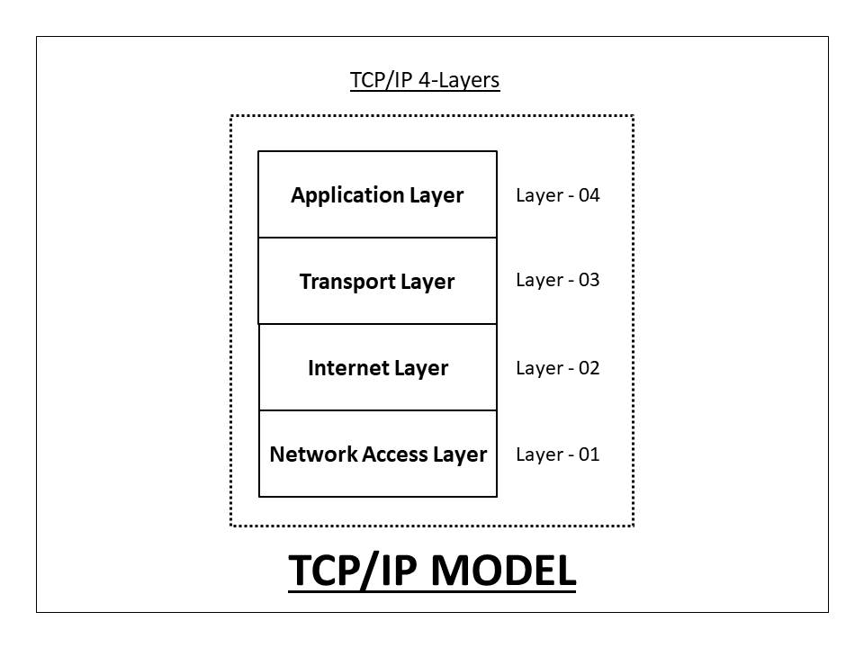
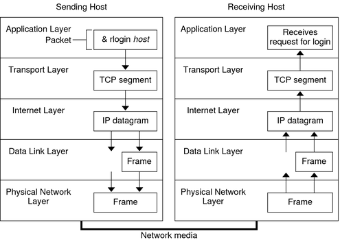
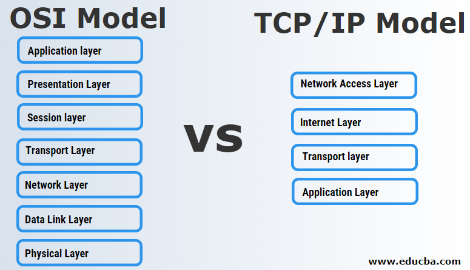

TCP/IP Model
The TCP/IP model is a set of rules and steps that explains how data moves from one device to another over a network or the internet.
👉 Think of TCP/IP like a delivery system
(Amazon / Swiggy style 🚚) that decides:
- How data is created
- How it is packed
- How it travels
- How it is delivered correctly
What is the TCP/IP Model?

🌐 Real-World Example (VERY IMPORTANT 💡)
📱 You open google.com on your phone.
- Your phone creates a request
- Data is broken into small packets
- Packets travel through routers on the internet
- Google’s server receives and understands the request
- Google sends the response back (page loads)
🧩 TCP/IP Model Layers (CCST Focus ⭐)
| Layer No. | Layer Name | What It Does |
|---|---|---|
| 4️⃣ | Application | What the user uses |
| 3️⃣ | Transport | How data is delivered |
| 2️⃣ | Internet | IP address & routing |
| 1️⃣ | Network Access | Physical sending of data |
TCP/IP Data Flow

🟦 Layer 4: Application Layer
Closest layer to the user. Allows apps and software to use the network.
Common Protocols:- HTTP / HTTPS → Websites
- FTP → File transfer
- SMTP → Sending emails
- DNS → Name → IP conversion
Typing
https://youtube.com👉 Application layer understands: “User wants a website”
🟩 Layer 3: Transport Layer
- TCP → Reliable, safe, slower
- UDP → Fast, no guarantee
🏦 Online banking → TCP (accuracy matters)
Exam Trick:
TCP = Reliable
UDP = Fast
🟨 Layer 2: Internet Layer
Handles IP addresses and routing.
Main Protocol: IPExample:
- Your IP → 192.168.1.10
- Google IP → 142.250.182.14
🟥 Layer 1: Network Access Layer
Responsible for physical data transmission.
Examples:- Ethernet cable
- Wi-Fi
- Network Interface Card (NIC)
⚡ Electrical signals (cable)
📡 Radio waves (Wi-Fi)
TCP/IP vs OSI Model

🔁 How Data Flows (VERY IMPORTANT 🔥)
📤 Sending Device
Application → Transport → Internet → Network Access
📥 Receiving Device
Network Access → Internet → Transport → Application
📌 Same layers, reverse direction
Application → Transport → Internet → Network Access
📥 Receiving Device
Network Access → Internet → Transport → Application
📌 Same layers, reverse direction
🧠 One-Line Memory Trick (Exam GOLD 🥇)
“Application creates data, Transport delivers it, Internet routes it, Network sends it.”
“Application creates data, Transport delivers it, Internet routes it, Network sends it.”